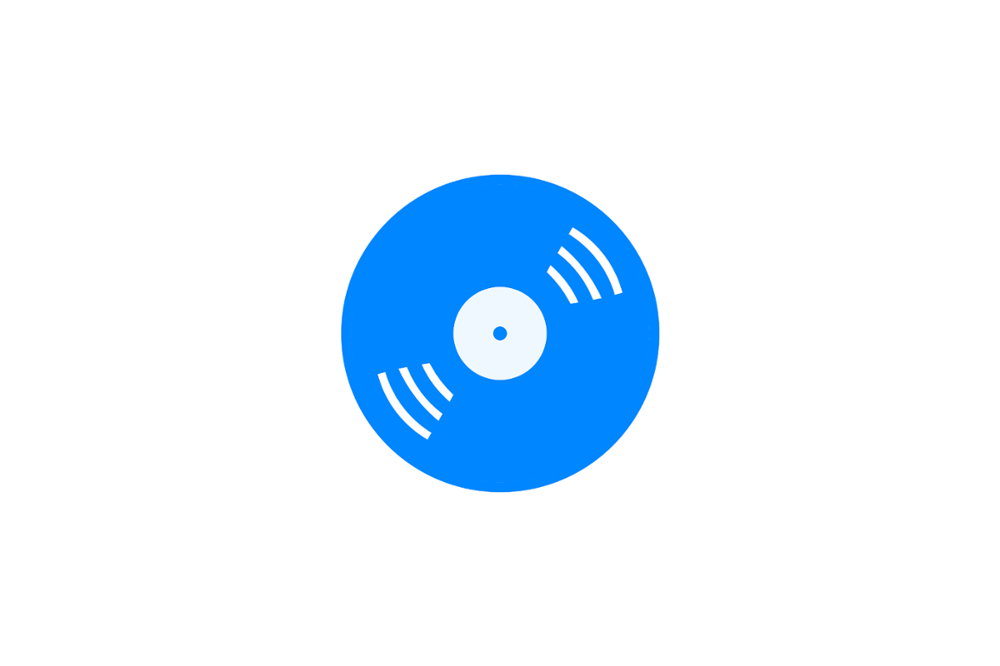
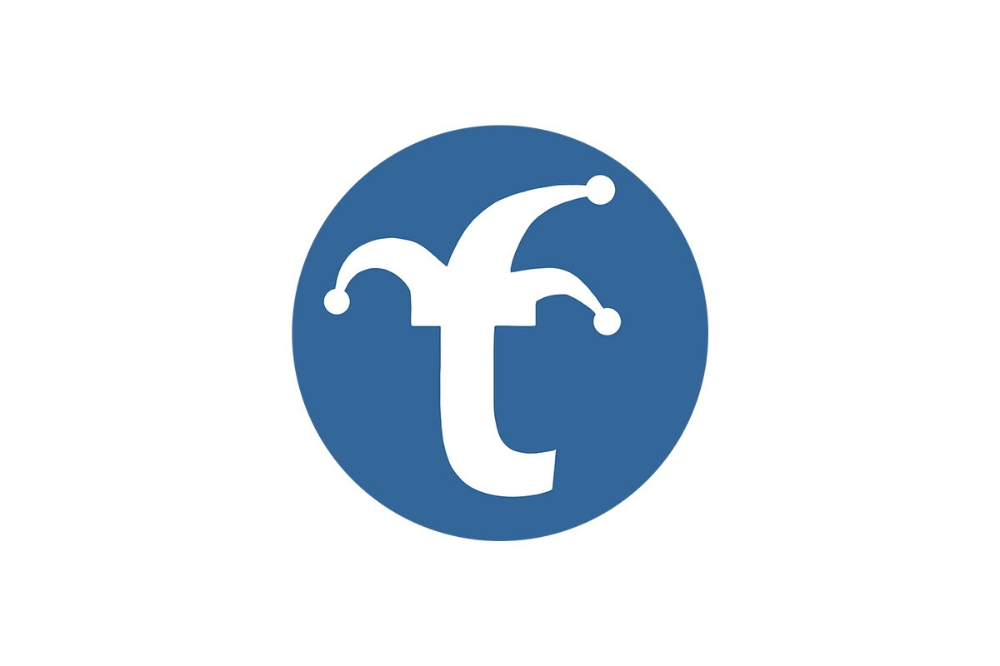

-
Open Source Grants
The Comcast Innovation Fund provides grants for both open source and educational research. The Open Source Development Grants fund development of open source software in areas benefiting cable, internet and broadband industries.
For more information, please visit the Comcast Innovation Fund.
-

Traffic Control
Traffic Control is an Open Source implementation of a Content Delivery Network (CDN). Originally developed by Comcast, it was released as a Comcast Open Source software in April 2015. In late 2016, Comcast was honored to have Traffic Control accepted by the Apache Software Foundation and renamed to Apache Traffic Control. It is currently under incubation and available at Apache Traffic Control.
-
Jobs
At Comcast, we are always looking for new talent to join our diverse and growing teams.
Employees in serviceable areas enjoy free digital TV and Internet service as well as deeply discounted phone service, and other features.
-

VinylDNS
VinylDNS is a vendor-agnostic frontend for enabling self-service and enhancing administration across all of your DNS servers.
-

Trickster
Trickster is a reverse proxy cache for the Prometheus HTTP APIv1 that dramatically accelerates dashboard rendering times for any series queried from Prometheus.
-
Redirector
Redirector is a collection of tools that facilitate redirection of incoming connections to a set of trusted backend servers based on a set of rules that operate on parameters in the incoming request. Redirector can assist with load-balancing across the backend servers and traffic-shaping to two versions of an application.
-
Bynar
Bynar is a tool for automating server remediation across multiple data centers. Many applications require quick, and fast, replacements of hardware as they fail, or the cluster can become degraded. Bynar is designed to automate the process for hardware failures gracefully, in turn saving you time and money.
- ❮ ❯
Open Source Software at Comcast
We are committed to open source software. We use it to build products, attract talent and evolve the technology we use to improve the customer experience. Beyond using open-source technologies to build our products, we contribute actively to a wide range of open-source and open-standards groups including the Linux Foundation, OpenStack Foundation, Apache Foundation, Cloud Foundry Foundation and Internet Engineering Task Force, to name just a few. We also encourage and support our software engineers in open-sourcing the projects they develop at Comcast.
We know the collective development ethos behind robust open source projects makes our products better and more powerful and we’re committed to being part of the global open source community now and into the future.